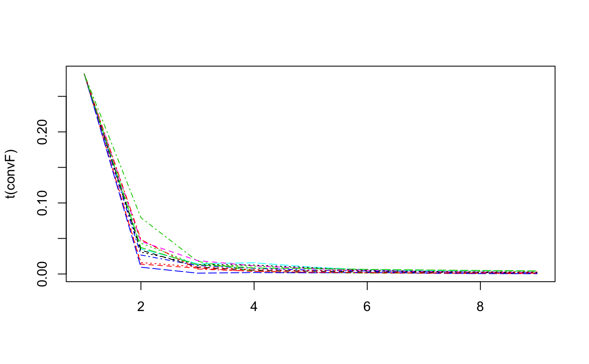
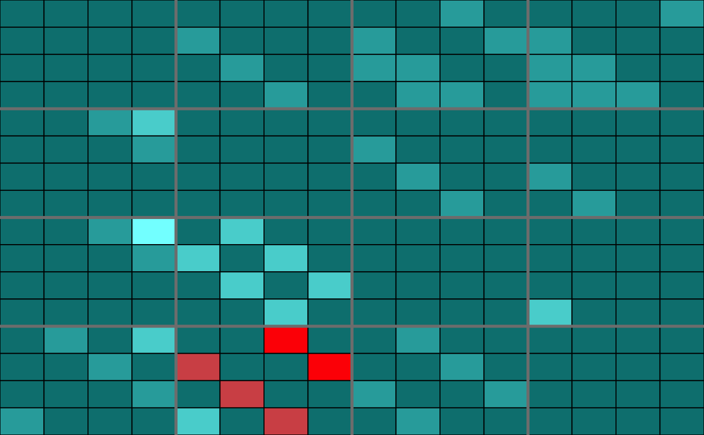
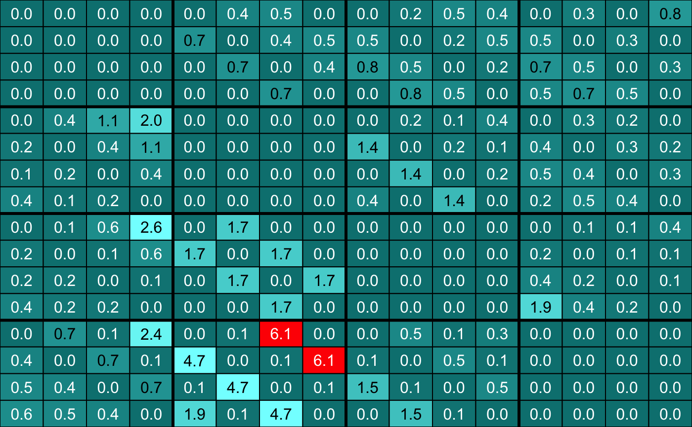
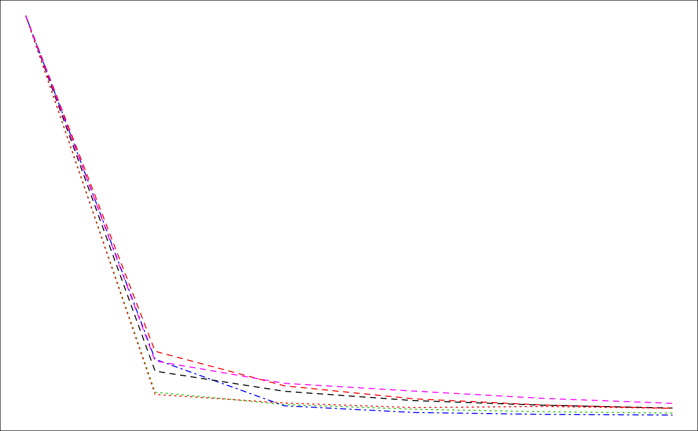

Reverse-engineer the network
inference-methods.RdReverse-engineer the network.
inference(M,…)
Arguments
| M | a micro_array object. |
|---|---|
| … | Optional arguments:
|
Details
The fitting built-in fitting functions (`fitfun`) provided with the `Patterns` package are :
- LASSO
from the `lars` package (default value)
- LASSO2
from the `glmnet` package
- SPLS
from the `spls` package
- ELASTICNET
from the `elasticnet` package
- stability.c060
from the `c060` package implementation of stability selection
- stability.c060.weighted
a new weighted version of the `c060` package implementation of stability selection
- robust
lasso from the `lars` package with light random Gaussian noise added to the explanatory variables
- selectboost.weighted
a new weighted version of the `selectboost` package implementation of the selectboost algorithm to look for the more stable links against resampling that takes into account the correlated structure of the predictors. If no weights are provided, equal weigths are for all the variables (=non weighted case).
The weights are viewed as a penalty factors in the penalized regression model: it is a number that multiplies the lambda value in the minimization problem to allow differential shrinkage, [Friedman et al. 2010](https://web.stanford.edu/~hastie/Papers/glmnet.pdf), equation 1 page 3. If equal to 0, it implies no shrinkage, and that variable is always included in the model. Default is 1 for all variables. Infinity means that the variable is excluded from the model. Note that the weights are rescaled to sum to the number of variables.
Value
A network object.
Examples
#With simulated data, default shaped F matrix and default LASSO from the lars package #as fitting function data(simul) infM <- inference(M)#> We are at step : 1 #> Computing Group (out of 4) : #> 1......................... #> 2......................... #> 3......................... #> 4......................... #> The convergence of the network is (L1 norm) : 0.01 #> We are at step : 2 #> Computing Group (out of 4) : #> 1......................... #> 2......................... #> 3......................... #> 4......................... #> The convergence of the network is (L1 norm) : 0.00475 #> We are at step : 3 #> Computing Group (out of 4) : #> 1......................... #> 2......................... #> 3......................... #> 4......................... #> The convergence of the network is (L1 norm) : 0.00311 #> We are at step : 4 #> Computing Group (out of 4) : #> 1......................... #> 2......................... #> 3......................... #> 4......................... #> The convergence of the network is (L1 norm) : 0.00217 #> We are at step : 5 #> Computing Group (out of 4) : #> 1......................... #> 2......................... #> 3......................... #> 4......................... #> The convergence of the network is (L1 norm) : 0.00168 #> We are at step : 6 #> Computing Group (out of 4) : #> 1......................... #> 2......................... #> 3......................... #> 4......................... #> The convergence of the network is (L1 norm) : 0.00132 #> We are at step : 7 #> Computing Group (out of 4) : #> 1......................... #> 2......................... #> 3......................... #> 4......................... #> The convergence of the network is (L1 norm) : 0.00112 #> We are at step : 8 #> Computing Group (out of 4) : #> 1......................... #> 2......................... #> 3......................... #> 4......................... #> The convergence of the network is (L1 norm) : 0.00098str(infM)#> Formal class 'network' [package "Patterns"] with 6 slots #> ..@ network: num [1:100, 1:100] 0 0 0 0 0 0 0 0 0 0 ... #> ..@ name : chr [1:100] "gene 1" "gene 2" "gene 3" "gene 4" ... #> ..@ F : num [1:4, 1:4, 1:16] 0 0 0 0 0 0 0 0 0 0 ... #> ..@ convF : num [1:16, 1:9] 0.281 0.281 0.281 0.281 0.281 ... #> .. ..- attr(*, "dimnames")=List of 2 #> .. .. ..$ : NULL #> .. .. ..$ : chr [1:9] "convF" "cc" "cc" "cc" ... #> ..@ convO : num [1:9] 5.36e+04 1.00e-02 4.75e-03 3.11e-03 2.17e-03 ... #> ..@ time_pt: int [1:4] 1 2 3 4#> Error in mget(plabels[hasSubclass], env): premier argument incorrect#> Error in mget(plabels[hasSubclass], env): premier argument incorrect#With simulated data, cascade network shaped F matrix (1 group per time measurement case) #and default LASSO from the lars package as fitting function infMcasc <- inference(M, Finit=CascadeFinit(4,4), Fshape=CascadeFshape(4,4))#> We are at step : 1 #> Computing Group (out of 4) : #> 1 #> 2......................... #> 3......................... #> 4......................... #> The convergence of the network is (L1 norm) : 0.0075 #> We are at step : 2 #> Computing Group (out of 4) : #> 1 #> 2......................... #> 3......................... #> 4......................... #> The convergence of the network is (L1 norm) : 0.00229 #> We are at step : 3 #> Computing Group (out of 4) : #> 1 #> 2......................... #> 3......................... #> 4......................... #> The convergence of the network is (L1 norm) : 0.00158 #> We are at step : 4 #> Computing Group (out of 4) : #> 1 #> 2......................... #> 3......................... #> 4......................... #> The convergence of the network is (L1 norm) : 0.00116 #> We are at step : 5 #> Computing Group (out of 4) : #> 1 #> 2......................... #> 3......................... #> 4......................... #> The convergence of the network is (L1 norm) : 9e-04str(infMcasc)#> Formal class 'network' [package "Patterns"] with 6 slots #> ..@ network: num [1:100, 1:100] 0 0 0 0 0 0 0 0 0 0 ... #> ..@ name : chr [1:100] "gene 1" "gene 2" "gene 3" "gene 4" ... #> ..@ F : num [1:4, 1:4, 1:16] 0 0 0 0 0 0 0 0 0 0 ... #> ..@ convF : num [1:16, 1:6] 0.141 0.141 0.141 0.141 0.141 ... #> .. ..- attr(*, "dimnames")=List of 2 #> .. .. ..$ : NULL #> .. .. ..$ : chr [1:6] "convF" "cc" "cc" "cc" ... #> ..@ convO : num [1:6] 5.36e+04 7.50e-03 2.29e-03 1.58e-03 1.16e-03 ... #> ..@ time_pt: int [1:4] 1 2 3 4#> Error in mget(plabels[hasSubclass], env): premier argument incorrect#> Error in mget(plabels[hasSubclass], env): premier argument incorrect#With selection of genes from GSE39411 data(Selection) infSel <- inference(Selection, Finit=CascadeFinit(4,4), Fshape=CascadeFshape(4,4))#> We are at step : 1 #> Computing Group (out of 4) : #> 1 #> 2................. #> 3........................................ #> 4......... #> The convergence of the network is (L1 norm) : 0.00634 #> We are at step : 2 #> Computing Group (out of 4) : #> 1 #> 2................. #> 3........................................ #> 4......... #> The convergence of the network is (L1 norm) : 0.00167 #> We are at step : 3 #> Computing Group (out of 4) : #> 1 #> 2................. #> 3........................................ #> 4......... #> The convergence of the network is (L1 norm) : 0.00121 #> We are at step : 4 #> Computing Group (out of 4) : #> 1 #> 2................. #> 3........................................ #> 4......... #> The convergence of the network is (L1 norm) : 0.00085str(infSel)#> Formal class 'network' [package "Patterns"] with 6 slots #> ..@ network: num [1:102, 1:102] 0 0 0 0 0 0 0 0 0 0 ... #> ..@ name : chr [1:102] "210226_at" "233516_s_at" "202081_at" "236719_at" ... #> ..@ F : num [1:4, 1:4, 1:16] 0 0 0 0 0 0 0 0 0 0 ... #> ..@ convF : num [1:16, 1:5] 0.141 0.141 0.141 0.141 0.141 ... #> .. ..- attr(*, "dimnames")=List of 2 #> .. .. ..$ : NULL #> .. .. ..$ : chr [1:5] "convF" "cc" "cc" "cc" ... #> ..@ convO : num [1:5] 0.942493 0.006344 0.001672 0.001207 0.000846 #> ..@ time_pt: num [1:4] 60 90 210 390str(infSel)#> Formal class 'network' [package "Patterns"] with 6 slots #> ..@ network: num [1:102, 1:102] 0 0 0 0 0 0 0 0 0 0 ... #> ..@ name : chr [1:102] "210226_at" "233516_s_at" "202081_at" "236719_at" ... #> ..@ F : num [1:4, 1:4, 1:16] 0 0 0 0 0 0 0 0 0 0 ... #> ..@ convF : num [1:16, 1:5] 0.141 0.141 0.141 0.141 0.141 ... #> .. ..- attr(*, "dimnames")=List of 2 #> .. .. ..$ : NULL #> .. .. ..$ : chr [1:5] "convF" "cc" "cc" "cc" ... #> ..@ convO : num [1:5] 0.942493 0.006344 0.001672 0.001207 0.000846 #> ..@ time_pt: num [1:4] 60 90 210 390#> Error in mget(plabels[hasSubclass], env): premier argument incorrect#> Error in mget(plabels[hasSubclass], env): premier argument incorrect